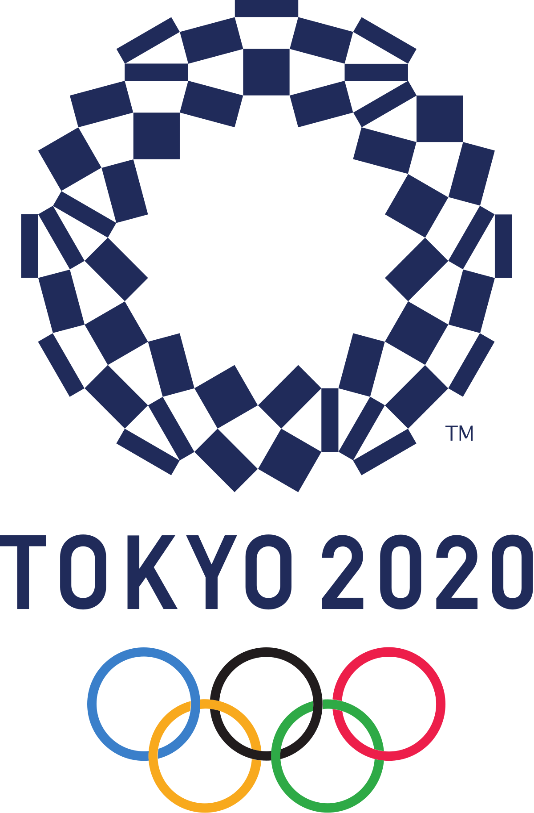
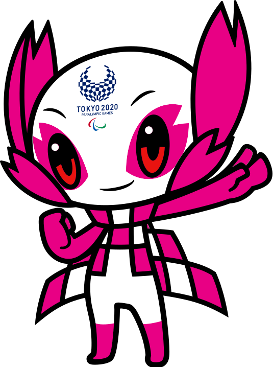
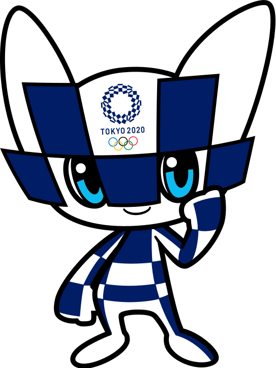

|



|
The 2020 Tokyo Olympics
Fifty-six years after having organised the Olympic Games, the Japanese capital will be hosting a Summer edition for the second time, from 24 July to 9 August 2020. The Games in 1964 radically transformed the country. According to the organisers of the event in 2020, the Games of the XXXII Olympiad of the modern era will be “the most innovative ever organised, and will rest on three fundamental principles to transform the world: striving for your personal best (achieving your personal best); accepting one another (unity in diversity); and passing on a legacy for the future (connecting to tomorrow)”.
Aligning with the reforms advocated by Olympic Agenda 2020, the Tokyo Games will use as many existing competition venues as possible, namely those built for the Games in 1964, such as the prestigious Nippon Budokkan for judo, the Baji Koen Park for equestrian events, and the Yoyogi National Gymnasium for handball. The Tokyo National Stadium, where the Opening and Closing Ceremonies and athletics competitions will be staged, will be completely revamped and replaced by a new arena.
Japan has been an Olympic land since the Summer Games of 1964, which were the first to be staged in Asia. In 2020, the country will host its fourth Games, if we include the Winter Games of 1972 in Sapporo and of 1998 in Nagano.
|
Date
24 July - 09 Aug
|
Country
Japan
|
Countdown
Calm down, it's a while
|
Website
Probably a better resource
|
Athletes Expected
11,091
|
Stadium
New National Stadium
|
Facts
Skateboarding might become an Olympic Sport
Will feature 339 Gold Medals
This is the second time Tokyo has hosted the Olympics
Tokyo is the safest city in the world
|
|
|